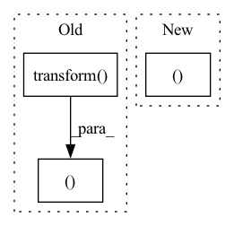

Pattern ID :3227
Before Change
vectorizer = TfidfVectorizer(stop_words="english")
x_train = normalize(vectorizer.fit_transform(train["text"]))
x_test = normalize(vectorizer.transform( test["text"]) )
y_train = list_to_csr(train["labels"], shape=(len(train), NUM_LABELS))
y_test = list_to_csr(test["labels"], shape=(len(test), NUM_LABELS))
return SklearnDataset(x_train, y_train), SklearnDataset(x_test, y_test)
After Change
ds_train = SklearnDataset.from_arrays(train["text"], y_train, vectorizer, train=True)
ds_test = SklearnDataset.from_arrays(test["text"], y_test, vectorizer, train=False)
return ds_train, ds_test
In pattern: SUPERPATTERN
Frequency: 4
Non-data size: 3
Instances Fragment ID: 12376136
Project Name: webis-de/small-text
Commit Name: 2616e04218056c2450095c749ea2a7a6c3b85488
Time: 2022-09-03
Author: chschroeder@users.noreply.github.com
File Name: examples/examplecode/data/example_data_multilabel.py
M Class Name: AnonimousClass
N Class Name: AnonimousClass
M Method Name: preprocess_data_sklearn(2)
N Method Name: preprocess_data_sklearn(2)
M Parent Class:
N Parent Class:
M File Name: examples/examplecode/data/example_data_multilabel.py
N File Name: examples/examplecode/data/example_data_multilabel.py
M Start Line: 19
M End Line: 27
N Start Line: 18
N End Line: 26
Before Change
vectorizer = TfidfVectorizer(stop_words="english")
x_train = vectorizer.fit_transform(train.data)
x_test = vectorizer.transform( test.data)
return SklearnDataset(x_train, train.target), SklearnDataset(x_test, test.target)
After Change
ds_train = SklearnDataset.from_arrays(train.data, train.target, vectorizer, train=True)
ds_test = SklearnDataset.from_arrays(test.data, test.target, vectorizer, train=False)
return ds_train, ds_test
Fragment ID: 12376137
Project Name: webis-de/small-text
Commit Name: 2616e04218056c2450095c749ea2a7a6c3b85488
Time: 2022-09-03
Author: chschroeder@users.noreply.github.com
File Name: examples/examplecode/data/example_data_binary.py
M Class Name: AnonimousClass
N Class Name: AnonimousClass
M Method Name: preprocess_data(2)
N Method Name: preprocess_data(2)
M Parent Class:
N Parent Class:
M File Name: examples/examplecode/data/example_data_binary.py
N File Name: examples/examplecode/data/example_data_binary.py
M Start Line: 12
M End Line: 17
N Start Line: 12
N End Line: 17
Before Change
// This can change the size of the picture and put the face in the approximate center
img = img.transform(img.size, Image.AFFINE, (1, 0, t[0] - w0/2, 0, 1, h0/2 - t[1]))
if mask is not None:
mask = mask.transform( mask.size, Image.AFFINE, (1, 0, t[0]-w0/2, 0, 1, h0/2 - t[1]))
w = (w0/s*102).astype(np.int32)
h = (h0/s*102).astype(np.int32)
// crop the image to 224*224 from image center
left = (w/2 - 112).astype(np.int32)
right = left + 224
up = (h/2 - 112).astype(np.int32)
below = up + 224
left_c = round(w0/w * left)
right_c = round(w0/w * right)
up_c = round(h0/h * up)
below_c = round(h0/h * below)
cropped_img = img.crop((left_c,up_c,right_c,below_c)).resize((render_size, render_size), resample=Image.BILINEAR)
// cropped_img = np.array(cropped_img)[:,:,::-1]
// cropped_img = np.expand_dims(cropped_img, 0)
img = img.resize((w,h),resample = Image.BILINEAR)
if mask is not None:
mask = mask.resize((w,h), resample = Image.BILINEAR)
lm = np.stack([lm[:,0] - t[0] + w0/2,lm[:,1] - t[1] + h0/2],axis = 1)/s*102
img = img.crop((left,up,right,below))
if mask is not None:
mask = mask.crop((left,up,right,below))
img = np.array(img)
if len(img.shape)==2:
img = np.expand_dims(img,-1)
img = np.repeat(img, 3, axis=-1)
else:
img = img[:,:,::-1] // Became BGR
img = np.expand_dims(img,0)
if mask is not None:
mask = np.expand_dims(mask,0)
lm = lm - np.reshape(np.array([(w/2 - 112),(h/2-112)]),[1,2])
return img, lm, mask, cropped_img, [left_c, right_c, up_c, below_c]
// resize and crop input images before sending to the R-Net
def Preprocess(img, lm, lm3D, mask=None, render_size=224):After Change
img = np.expand_dims(img,0)
lm = lm - np.reshape(np.array([(w/2 - 112),(h/2-112)]),[1,2])
return img, lm, cropped_img, [left_c, right_c, up_c, below_c, render_size, t[0]-w0/2, h0/2-t[1]]
def Preprocess(img, lm, lm3D, render_size=224, box=False):
w0,h0 = img.size Fragment ID: 12376132
Project Name: yeongjoonju/cfr-gan
Commit Name: 6840d7a2588a39fce22c2c80665f3796945ac43c
Time: 2022-02-27
Author: yj_ju@korea.ac.kr
File Name: mmRegressor/preprocess_img.py
M Class Name: AnonimousClass
N Class Name: AnonimousClass
M Method Name: process_img(5)
N Method Name: process_img(6)
M Parent Class:
N Parent Class:
M File Name: mmRegressor/preprocess_img.py
N File Name: mmRegressor/preprocess_img.py
M Start Line: 32
M End Line: 77
N Start Line: 47
N End Line: 67
Before Change
//we just set default loader with Pillow Image
sample = Image.open(abs_path).convert("RGB")
if self.transform is not None:
sample = self.transform( sample)
return sample, target
def __len__(self):
return self.len
After Change
def __getitem__(self, index):
path, target = self.samples[index]
abs_path = os.path.join(self.path_prefix, path)
return self._buildSampleFromPath(abs_path), target
def _buildSampleFromPath(self, abs_path):
//we just set default loader with Pillow Image
sample = Image.open(abs_path).convert("RGB") Fragment ID: 12376135
Project Name: deepvac/deepvac
Commit Name: 8838968ad22564a7b97bd7e11a827438acf2689a
Time: 2020-08-14
Author: gemfield@civilnet.cn
File Name: lib/syszux_loader.py
M Class Name: FileLineDataset
N Class Name: FileLineDataset
M Method Name: __getitem__(2)
N Method Name: __getitem__(2)
M Parent Class: Dataset
N Parent Class: Dataset
M File Name: lib/syszux_loader.py
N File Name: lib/syszux_loader.py
M Start Line: 53
M End Line: 59
N Start Line: 56
N End Line: 57